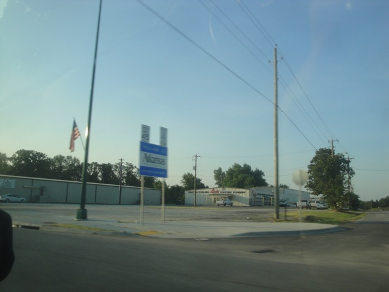
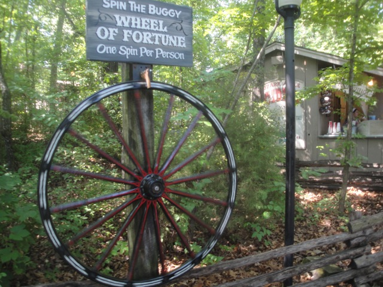
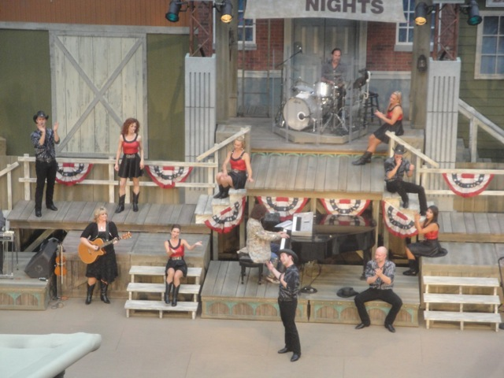
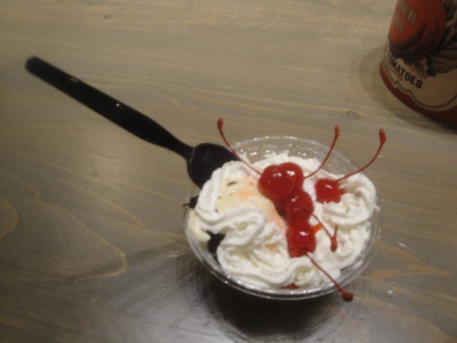

| |
Texas/Rocky Mtn Road Trip
Las Vegas/Castles'N'Coasters Six Flags Fiesta Texas Schlitterbahn
Sea World San Antonio Gavelston Pier
Six Flags Over Texas
Silver Dollar City
Frontier City
Colorado Elitch Gardens Lakeside Park Glenwood Springs

Well, our suicide night to Branson was successful in that we ended up making it. Can I please say "Told ya I could do it!!!" to everyone who doubted me. And yeah. We drove out of Texas, through Oklahoma, and are now passing through Arkansas. We weren't planning on going through Arkansas, but hey. Cody randomly decided to go this way while I was sleeping.
Later on this freeway, Cody got pulled over for speeding (Great, first Glass Beach, now this. Why are you making Speeding Tickets an Incrediblecoasters Road Trip Tradition!!?). Turns out that the speed limit changes from 80 mph to 65 mph, and cops pull people over who don't recognize the change immidetly so that their town can make a profit since god knows their economy can't thrive under any other circumstances. Ironically, what was originally just gonna be a drive through is now a new state credit since the speeding ticket meets all the requirements to count as a state credit (A: You have to stop for something, and B: You must have a memorable experience and a story to tell from the state). Cody, you really need to try the crying your way thing sometime.
I sure do Silver Dollar City. I sure do.
This park was amazing enough already, but I feel like there's a certain new thing that particuarly pulled me back to Silver Dollar City.
Oh yeah!!! The Drop in the Dark special event!!! Thats tonight!!! Looking foreword to that!!! =)

All right. Lets see what our fortune is Silver Dollar City style.
Hmm. Missouri can get pretty confusing at times, but really. I think you're confusing this for Arkansas.
Time for a spin on what was my favorite coaster at Silver Dollar City until today, Wildfire.
Its still running great in 2013.
Ok. I can't keep quiet about this anymore. We're here for Outlaw Run.
HOLY SH*T!!! This has got to be one of the BEST COASTERS EVER!!!!!
This ride is just absolutely insane!!! It does things that you would never in a million years imagine a wooden coaster would ever do!!!
And despite having all these insane laterals, crazy steep drops, ridicolous turns, and disorienting inline twists, it all feels so natural.
Ok. Why can't we have something as delicous as Apple Butter in California?
Silver Dollar City clearly sees that we need more school and has come prepared for us.
Yep. This is what I spend all of my time in class doing.
I absolutely love the charm of this park.
Between this and the apple butter, this park really knows how to put their apples to good use.
Oh yeah. Among all the craziness and insanity of Outlaw Run, I almost forgot about this gem of a ride.
Umm...never mind the explosion and just keep enjoying your day at Silver Dollar City.
Nonsense!!! That back spike works just fine for your information.
 Now shut up and just enjoy your ride on Powder Keg.
Now shut up and just enjoy your ride on Powder Keg.
 But seriously. Powder Keg is a great and unique ride. Be sure to ride it at Silver Dollar City.
But seriously. Powder Keg is a great and unique ride. Be sure to ride it at Silver Dollar City.
 Finally tried Pork Rinds since they were giving out free samples. And sorry, but these taste disgusting.
Finally tried Pork Rinds since they were giving out free samples. And sorry, but these taste disgusting.
 Well the bad news is that Thunderation offically doesn't go backwards anymore. BOO!!!! =( But the good news is that its still the best mine train ever made. =)
Well the bad news is that Thunderation offically doesn't go backwards anymore. BOO!!!! =( But the good news is that its still the best mine train ever made. =)
Fire in the Hole. Its so odd, bizzare, and strange. But its a really good dark ride.
I wasn't joking when I said that there's no such thing as bad food at Silver Dollar City (except for Pork Rinds).
Well, another lightning storm came and we decided to hit the one of the few rides that wasn't closed. And hey. Flooded Mine is an awesome ride.
Damn. My score is nice.
Hey. Some people love Silver Dollar City so much that they refuse to leave, not even after they die.
"Out of my way you pathetic amatuers. Let me show you how the Accordion is really played."
Oh yeah. Lets go check out the Marvel Cave since, you know, Silver Dollar City has a FREAKING FREE CAVE HERE!!!!!
The good news is that I was wrong. My 2010 tour was not the last tour to have the bats. The bad news is that the bats are dying from White Nose Syndome.
Sh*t. Good thing I'm not a bat.
In other news, I now have the power to turn drawn people real.
Here you see the hand drawn people.
*Poof* See, I turned them into real people. =)
The only natural opening to the Marvel Cave.
Keep on going deeper and deeper into hell (Seriously, the local indians thought this was the entrance to hell). >=)
Come on. Show me a single cloud in your cloud room. I dare you.
Be careful and don't almost slip down the stairs like I did.
*Sigh* The Lightning Storm is still going on. But unlike another certain park *cough* Six Flags Over Texas *cough*, when Silver Dollar City closes stuff for lightning, I can actually SEE the lightning. =)
Well hey. At least now we can get an early dinner. And yeah, those skillets are unbelievably good.
Though they won't give you any actual pork, there are tons of fat pigs down in Arkansas.
Hooray!!! The lightning is gone and we can finally ride things!!! So of course, we had ourselves a mini-marathon on Wildfire.
Holy Crap!!! I just realized. I didn't get stung by a bee on Wildfire like last time!!! It's a miracle!!!! =)
All right. The Drop in the Dark event is about to begin. First off, we get special seating for a Silver Dollar City show. =)

Sorry to say this Silver Dollar City, but I didn't like your show. It was ok at first. And by ok, I mean tolerable. But it just kept going and going. There was a point where I thought it was over, but it was just a quick intermission. I was getting tired and wanted to ride Outlaw Run and eat Ice Cream. Then during the last 5 minutes of the show, it started to get religious, and that is where I drew the line and said "Screw this!! I'm leaving early to get ice cream!" and just walked out.
 Sweet!!! Its time for the Ice Cream Social to begin!!! =)
Sweet!!! Its time for the Ice Cream Social to begin!!! =)

You can never go wrong with Ice Cream.
 And of course, after eating Ice Cream, what else do you do but marathon one of the best coasters ever!!! Outlaw Run!!! Don't worry about that line. We got PLENTY of rides in on Outlaw Run. And during the middle of our ERT, a guy from a local newspaper actually came up to us and interviewed us about the ride since we were the only people at the event who traveled all the way from California to ride Outlaw Run. All in all, it was a crazy night and I loved every second of it. =)
And of course, after eating Ice Cream, what else do you do but marathon one of the best coasters ever!!! Outlaw Run!!! Don't worry about that line. We got PLENTY of rides in on Outlaw Run. And during the middle of our ERT, a guy from a local newspaper actually came up to us and interviewed us about the ride since we were the only people at the event who traveled all the way from California to ride Outlaw Run. All in all, it was a crazy night and I loved every second of it. =)
 Well, since our tickets allowed us to go to Silver Dollar City two days in a row (Did I mention that those Drop in the Dark tickets, which not only got us into Silver Dollar City for 2 days, gave us free Ice Cream, special show seating, and Outlaw Run ERT for $50 while regular tickets are $60), we decided to take advantage of our tickets cause really. Do I need an excuse to go back to Silver Dollar City?
Well, since our tickets allowed us to go to Silver Dollar City two days in a row (Did I mention that those Drop in the Dark tickets, which not only got us into Silver Dollar City for 2 days, gave us free Ice Cream, special show seating, and Outlaw Run ERT for $50 while regular tickets are $60), we decided to take advantage of our tickets cause really. Do I need an excuse to go back to Silver Dollar City?
Outlaw Run is great and all, but there is still one great thing at Silver Dollar City I still haven't done yet.
That's right. I have yet to get my Cinnamon Bread.
Oh my god!!! This stuff is so delicous!!! This must be what kings eat.
Ok. I won't look in. *snicker*
"What the hell are you doing man!!? Gimme some privacy!!!"
"You have no privacy anymore. Ever heard of the NSA?"
We're climbing up the stairs to nowhere.
*gasp* I can read!!! Therefor, I must love their books!!! Regardless of what the books are about!!
 "Is that a dry spot I see on you? We'll fix that."
"Is that a dry spot I see on you? We'll fix that."
You need to find Outlaw Run? Just see this on the ground and you're good.
Damn. The park is A LOT more crowded today. Good thing we rode the crap out of Outlaw Run yesterday.
You gotta give the Barn Swing credit. Best themed S&S Screaming Swing I've ever seen.
 "Martha!!! Come look!!! Someone left a Screamin Swing in our barn!!!"
"Martha!!! Come look!!! Someone left a Screamin Swing in our barn!!!"
Warning. Silver Dollar City will rob you by tempting you with such delicous treats such as Red Cream Floats.
 I could use a Wildfire ride right now. Yeah, some good old B&M should do the trick.
I could use a Wildfire ride right now. Yeah, some good old B&M should do the trick.
Holy Crap!!! Even the Wildfire line is too long!!! Damn, it really is crowded today.
 Yeah. You get some nice whip in the Cobra Roll right there.
Yeah. You get some nice whip in the Cobra Roll right there.
 Enjoy your ride guys.
Enjoy your ride guys.
It's called Multi-tasking you dipsh*t. Get with the times.
Oh hey. I've still got my meal voucher to use from the Drop in the Dark event (It really was a great deal). So yeah, I got my lunch, complete with Strawberry Shortcake.
This should give you an idea of how crowded Silver Dollar City is.
"Is the log ride open?"
Umm, I don't think its healthy for the tree to be constantly peeing water.
Love the random bits of charm in the park.
That's it guys. I've officailly converted into a Cave Enthusiast. I will be completely re-doing the site (again) and turning it into www.incrediblecaves.com. Hope you enjoyed the roller coaster days of this site.
Well there's another lightning storm and we aren't really riding much, so we decided to head on out and see the rest of Branson.
*Sigh* I see that nothing has changed with the Ozark Wildcat. Please just open it up already (Never gonna happen). =(
Hmm. That looks like a good show.
Our host, an expert on Branson, recommended that we see the Branson Landing Water Show, and I must admit. It was really good.
Come on. Lets all hop on Dirk.
Well, like I said earlier. Our host is a Branson expert since he essentially writes the Branson Magazine (those travel magazines that are a guide to tourists on what to do in a city, and in this case, Branson). Well tonight, he had to see a show to get photos for the Magazine. Well he just let us tag along and we ended up getting (almost) front row seats to see the Heygoods. One of the best shows in Branson. =)
The Heygoods are a group that do really good covers of good songs.
No seriously. These people were really good.
 They did a really good job at covering songs such as "The Devil Went Down to Georgia" and "Signed, Sealed, Delivered (I'm Yours)".
They did a really good job at covering songs such as "The Devil Went Down to Georgia" and "Signed, Sealed, Delivered (I'm Yours)".
Come on. I gotta have more Banjo over here!!
Warning. If you appear even remotely bored at this show, the Heygoods will throw a giant beach ball at your head.
Introducing the star of the show, The Banjo!!!
Telling our stories of us camping when we were younger.
 The show played a wide variety of music, all the way from country to rock.
The show played a wide variety of music, all the way from country to rock.
"Ugh. Not again. That's the fifth piano this has happened to this year."
"Was it you!!? Are you responisble for ruining all our pianos!!?"
I know I kept saying it again and again that night, but to our host, Thank you again so much for these tickets. The show was great, and you are awesome. With this and all the awesomeness of Silver Dollar City, I'm really looking foreword to coming back to Branson again.
Frontier City
Home
|
{kind=link}